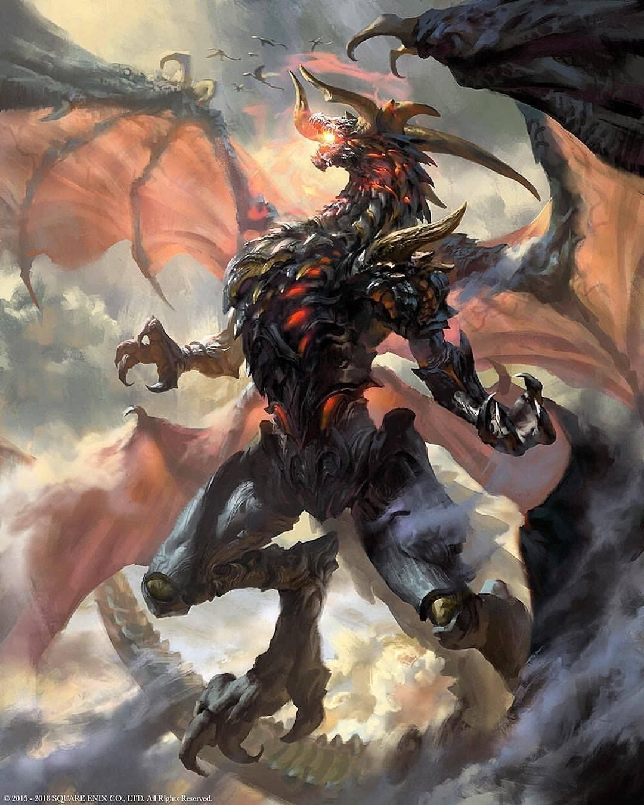
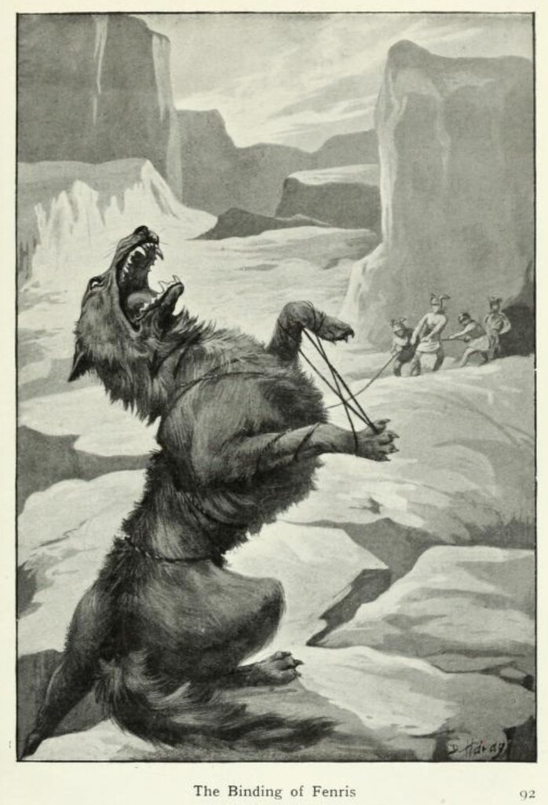
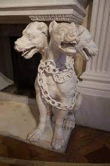
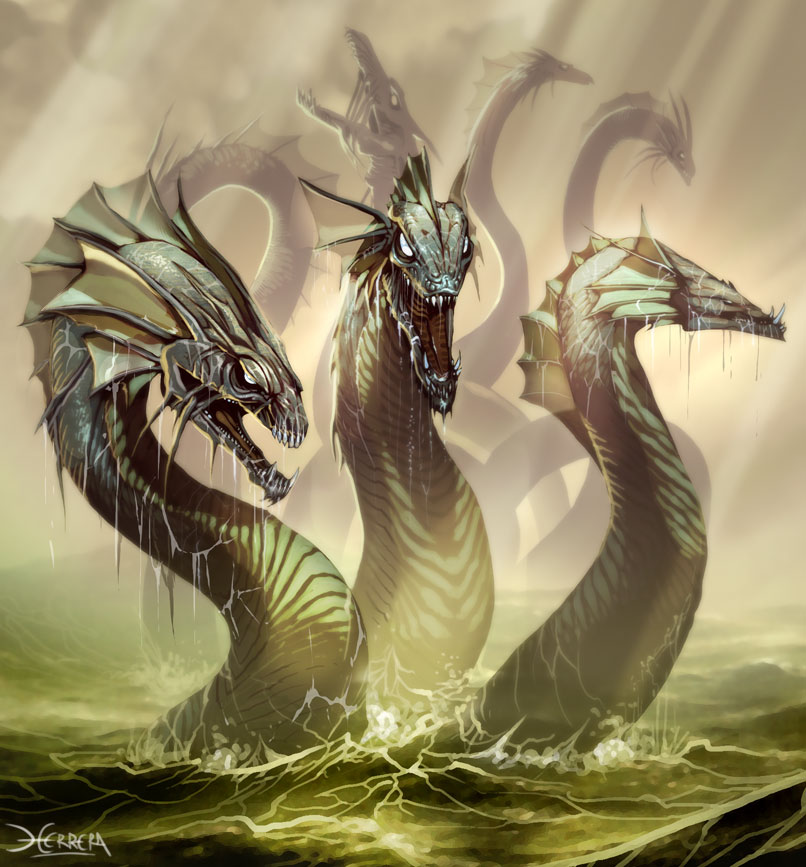
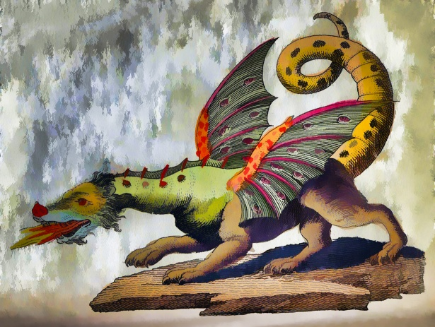
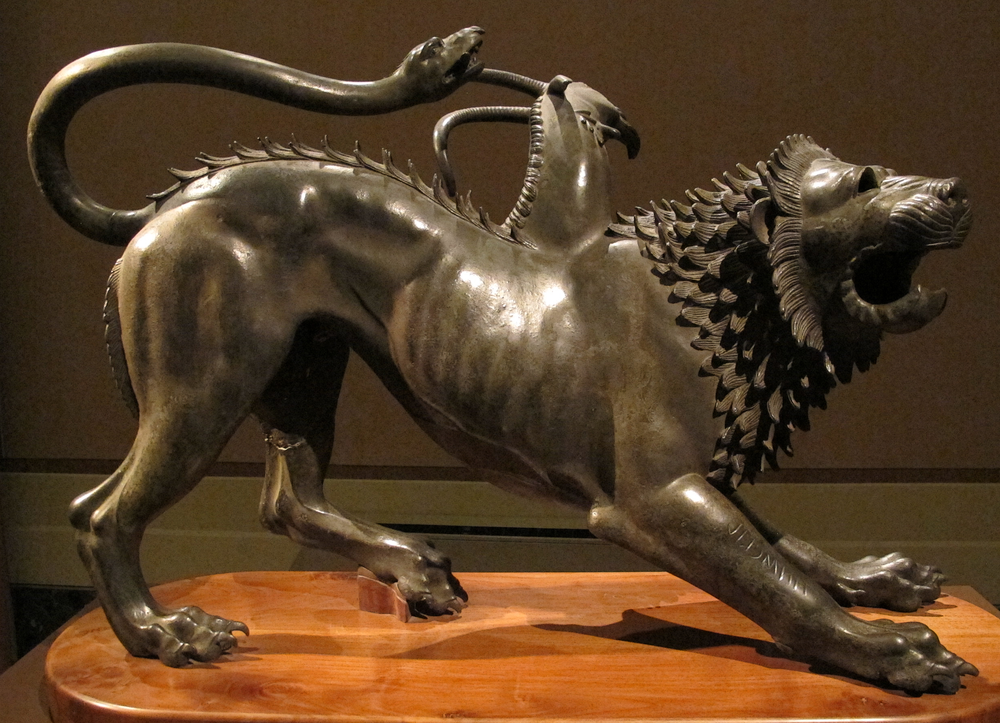
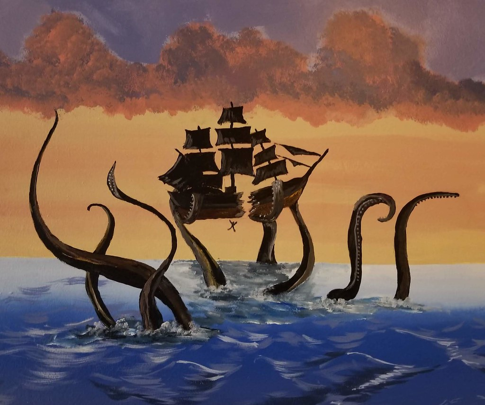
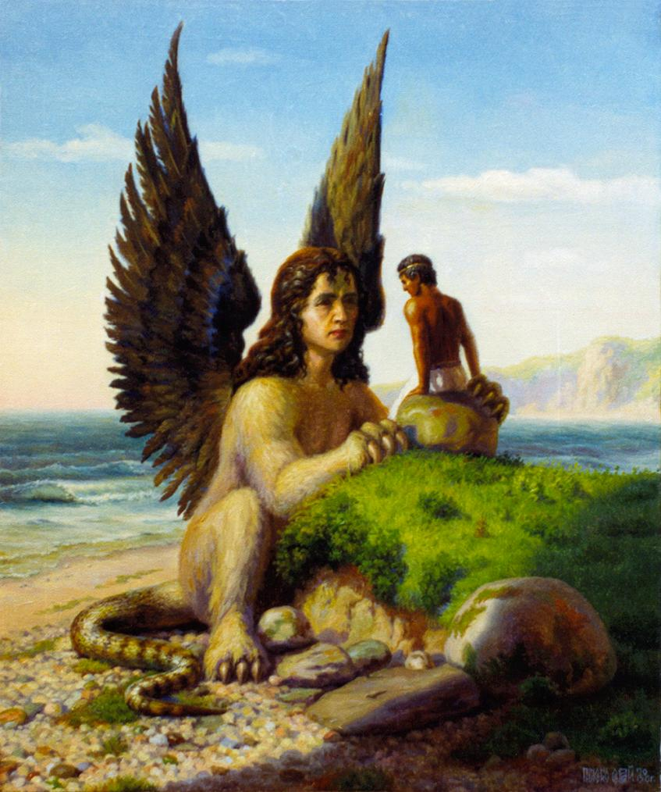
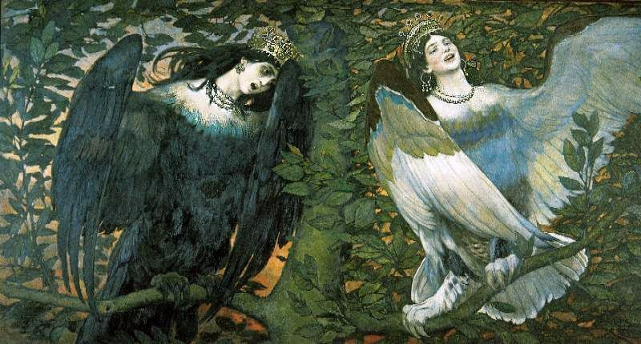

Top 10 Mythological Creatures
| Number | Name | Description | Image |
|---|---|---|---|
| 1 | Bahamut | Is a dragon god that rides the back of a whale and later depicted as a fish. |  |
| 2 | Fenrir | A giant wolf that is the on of Loki and is some myth, will devour the sun. |  |
| 3 | Cerberus | A giant three headed dog, known for protacting the gates to the underworld. |  |
| 4 | The Lernaean Hydra | A giant water serpent with mulstiply heads, which if one is cut off, two will grow in it's place. |  |
| 5 | Leviathan | A giant monstrous sea-serpent in Jewish mythology and a symbol of Israel's enemies | |
| 6 | Basilisks | A chimeric monster, born from a toad or serpent's egg incubated under a cockerel. |  |
| 7 | The Chimera | A female, fire-breathing beast with the body and main head of a lion, middle as a goat's head, and a snake tail or dragon behind. |  |
| 8 | The Kraken | A legendary sea monster of gigantic size and cephalopod-like appearance in Scandinavian folklore. |  |
| 9 | The Sphinx | A creature with the body of a lion and a human head. Known for telling riddles. |  |
| 10 | Siren | Half-bird and half-human, a siren is a creature that lures sailor's to their doom. |  |